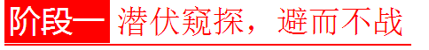

官方二维码
免费情感热线电话
4006-299-520

官方二维码
免费情感热线电话
4006-299-520

我分手了，我想挽回，我该怎么办？
每一个想要挽回爱情的人都会迷茫，无从下手，这是因为你没有摸透挽回的本质。两性之间的情感，从恋爱到到分手，从来都是一场场没有硝烟的战争。挽回呢？挽回是心理攻防战！
我们把挽回分为三个阶段，在每个阶段把握女性心理，才能打赢这场挽回心理攻防战。
本阶段是冷冻阶段，时间范围是在你们刚分手到重新建立联系之间。
女人在分手之后，首先进入的是一个自我疗伤的状态。在这个时候，她心里是绝望而痛苦的，充满了对前任的厌恶憎恨，对生活也失去了信心，这时候绝对不要去刺激她。
死缠烂打，围追堵截。趁着还有对方的联系方式，抱着“赶早不赶晚”的态度，你开始不停的电话微信轰炸，求原谅，求复合。在女人家与公司门口围追堵截，恨不得时时刻刻出现在她身边。最终，不堪其扰的她把你拉黑了，彻底失去了挽回的可能。
隐身潜伏。女人在这个阶段痛苦的根源就是你，内心充满了对你的厌恶憎恨。这时候你应该进行“隐身”，从女人的身边消失，给她一个释放负面情绪的时间和空间。随着你的暂时“消失”不刷存在感，女人对你的的负面情绪渐渐的随时间变化而减弱，最终消失掉。
这个阶段的“隐身”，并不是让你真的毫不关心女人的状态变化，而是潜伏起来，暗中窥探，从侧面打听她的状态变化，寻找重建联系的时机。
这个阶段是在女人对你的负面情绪释放的差不多之后开始的，你要通过各种方式跟她重新建立联系，蚕食她的心墙，让她重新对你投入感情。
当女人释放完对你的负面情绪之后，她对你处在一个不喜不悲的情感状态，她不会讨厌你，但你曾经对她造成的伤害还存在，她不想跟你复合。
急功近利，操之过急。终于等到了她不再厌恶你，你立刻开始表达自己想跟她重新开始的希望。但在这个时候，你们之间并没有恢复感情的基础，她仅仅是不那么讨厌你而已。因为她现在并不想跟你重新开始，所以你的表白会给她一种危机感，让她不知所措，拒绝跟你来往。
告诉她你们虽然分手了，但还可以当朋友，多个朋友多条路。鉴于曾经你们也有相处愉悦的时候，她现在对你的负面情绪也基本都释放完毕，她会比较愿意跟你做朋友。在这个阶段，不要去暴露你求复合的目的，而是以朋友的身份不断加深双方的联系，增加感情基础。
在跟她重新往来之后，她有很多种渠道来了解你的生活，即使不特意去关注，也会无意中注意到。这时候的你需要多培养自己的兴趣爱好，让自己的生活丰富多彩起来。当她了解到你的性格变得积极有趣起来，你的生活变得精彩起来，她会不自觉的被你吸引，在你身上投入越来越多的关注。
这个阶段是一个印象重塑，增加感情基础的阶段。通过重建友谊的方式，你在不断的蚕食她的心墙，渗透到她的生活中，全方位的包围她。通过提升吸引力的方式，让她对你刮目相看，眼睛离不开你，越来越被你吸引。在这个阶段切记不要表白，做到围而不攻，诱“敌”深入。
当你们的关系越来越密切，她对你的好感越来越浓的时候，你要抓住时机，去寻求复合，最终达到挽回感情的目的。
因为你上阶段的做法，女人现在对你很有好感。她的心里隐约的期待你的告白，期待与你重新开始，但又羞于表达。
迟迟不行动，沦为“男闺蜜”。会有一些男人，在感情基础达到了可以告白的时候反而犹豫了，患得患失，害怕自己告白后对方拒绝，以后会尴尬无法相处，从而错过了升级感情最好的阶段。等到你终于准备好了所有，进行告白的时候，发现她已经把你当成了“男闺蜜”，你们再也没有办法变成情侣关系。
你的最终目的是挽回这段爱情，所以当你在与对方维持了良好的朋友关系之后，你要增加一些暧昧的话题，将你们的感情往两性方面拉，千万不要一直处在纯朋友阶段，一旦对方认定你就是朋友，你们之间再也没有可能了。
暧昧其实就是试探她是否对你有感觉，如果她对你的暧昧话题表现出不反感的态度，就表明她对你有两性关系的期待，这时候你就要开始策划告白，一举攻克对方，成功挽回爱情。
有学员遇到过这种情况：对方明明对他的暧昧话题有正面回应，隐含期待，但告白的时候却拒绝了他，而拒绝的态度又有些不情愿。遇到这种情况不要担心，这是对方羞涩和矜持的原因，她虽然对你暗含期待，但又觉得分手了再复合有点拉不下脸来，所以才拒绝了你。针对这种情况，继续展开攻势，让她看到你的诚意，多试几次，总会成功的。